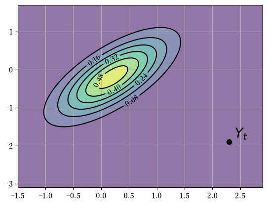
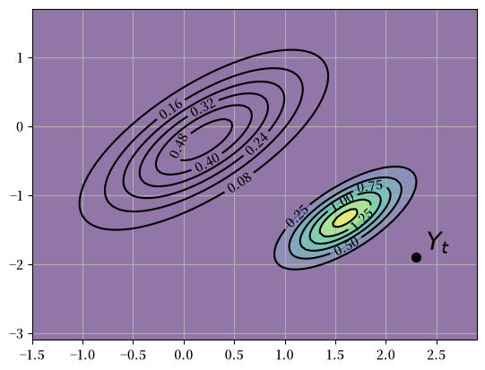
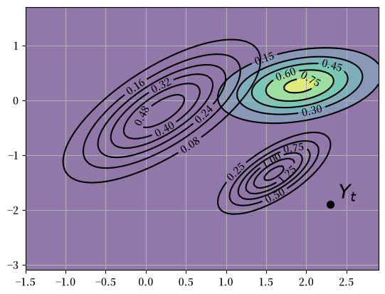
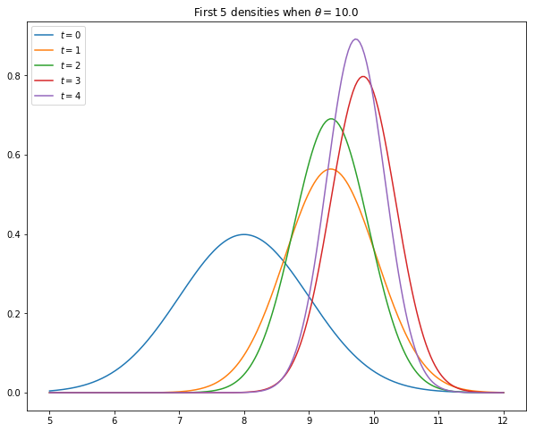
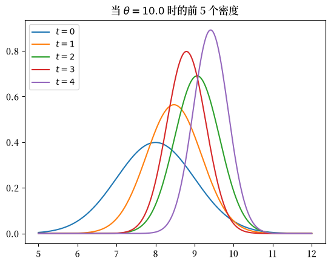
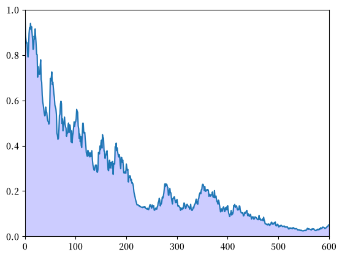
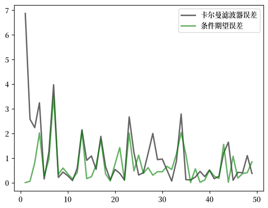

45. 初见卡尔曼滤波器#
除了Anaconda中已有的库外，本课程还需要以下库：
!pip install quantecon
45.1. 概述#
本讲座为卡尔曼滤波器提供了一个简单直观的介绍
适合以下读者
听说过卡尔曼滤波器但不知道它如何运作的人，或者
知道卡尔曼滤波的方程但不知道这些方程从何而来的人
后续讲座在更具应用性和计量经济学的背景下使用相同的递归逻辑。
参见卡尔曼滤波器进阶，其中讨论了一个企业推断工人隐藏的人力资本和努力程度的经济学应用。
参见The Kalman Filter and Vector Autoregressions，其中推导了新息表示及其与向量自回归的联系。
关于卡尔曼滤波的更多（进阶）阅读材料，请参见：
第二个参考文献对卡尔曼滤波器进行了全面的阐述。
所需知识：熟悉矩阵运算、多元正态分布、协方差矩阵等。
我们需要以下导入：
import matplotlib.pyplot as plt
import matplotlib as mpl
FONTPATH = "fonts/SourceHanSerifSC-SemiBold.otf"
mpl.font_manager.fontManager.addfont(FONTPATH)
plt.rcParams['font.family'] = ['Source Han Serif SC']
from scipy import linalg
import numpy as np
from quantecon import Kalman, LinearStateSpace
from scipy.stats import norm, multivariate_normal
from scipy.integrate import quad
from scipy.linalg import eigvals
45.2. 基本概念#
卡尔曼滤波器在经济学中有许多应用，但现在让我们假装我们是火箭科学家。
一枚导弹从敌国发射，我们的任务是追踪它。
让 \(X_t \in \mathbb{R}^2\) 表示导弹的当前位置——一个表示地图上经纬度坐标的数对。
在当前时刻，位置 \(X_t\) 是未知的，但我们对它有一些认知。
我们当然可以给出一个点预测。
例如，它可能标记地球上蒙古北部某处的一个点。
但事实是我们并不确定。
而总统想知道：导弹在曼哈顿500公里范围内的概率是多少？
点预测无法回答这个问题。
因此，最好我们能通过一个二元概率密度 \(p\) 来表达我们当前的理解。
这里 \(\int_E p(x)dx\) 表示导弹位于区域 \(E\) 内的概率。
我们将 \(p\) 称为随机变量 \(X\) 的先验分布。
为了使问题便于处理，我们暂时假设我们的先验分布是高斯分布。
特别地，我们采用
其中 \(\mu\) 是分布的（向量）均值——一个自然的点预测——而 \(\Sigma\) 是一个 \(2 \times 2\) 的协方差矩阵。
在我们的模拟中，我们假设
这个密度 \(p\) 在下面以等高线图的形式显示，其中红色椭圆的中心等于 \(\mu\)。
# 设定高斯先验分布 p
Σ = np.array([[0.4, 0.3],
[0.3, 0.45]])
μ = np.array([[0.2],
[-0.2]])
# 从测量方程 Y = G X + v 定义矩阵 G 和 R
G = np.array([[1, 0],
[0, 1]])
R = 0.5 * Σ
# 矩阵 A 和 Q
A = np.array([[1.2, 0],
[0, -0.2]])
Q = 0.3 * Σ
# y 的观测值
y = np.array([[2.3],
[-1.9]])
# 设定绘图网格
x_grid = np.linspace(-1.5, 2.9, 100)
y_grid = np.linspace(-3.1, 1.7, 100)
X, Y = np.meshgrid(x_grid, y_grid)
def gen_gaussian_plot_vals(μ, C):
"用于绘制二元高斯 N(μ, C) 的 Z 值"
pos = np.dstack((X, Y))
return multivariate_normal(μ.ravel(), C).pdf(pos)
# 绘制图形
fig, ax = plt.subplots()
ax.grid()
Z = gen_gaussian_plot_vals(μ, Σ)
ax.contourf(X, Y, Z, 6, alpha=0.6, cmap="viridis")
cs = ax.contour(X, Y, Z, 6, colors="black")
ax.clabel(cs, inline=1, fontsize=10)
plt.show()
findfont: Failed to find font weight normal, now using 600.
45.2.1. 滤波步骤#
现在我们有一些好消息和坏消息。
好消息是我们的传感器已经定位到导弹，报告显示当前位置是\(Y_t = (2.3, -1.9)\)。
下图显示了原始先验分布\(p\)和新报告的信号\(Y_t\)
fig, ax = plt.subplots()
ax.grid()
Z = gen_gaussian_plot_vals(μ, Σ)
ax.contourf(X, Y, Z, 6, alpha=0.6, cmap="viridis")
cs = ax.contour(X, Y, Z, 6, colors="black")
ax.clabel(cs, inline=1, fontsize=10)
y_1, y_2 = y[0].item(), y[1].item()
ax.scatter(y_1, y_2, marker="o", s=50, color="black", zorder=3)
ax.text(y_1 + 0.1, y_2 + 0.1, "$Y_t$", fontsize=20, color="black")
plt.show()
findfont: Failed to find font weight normal, now using 600.
findfont: Failed to find font weight normal, now using 600.

坏消息是我们的传感器并不精确。
传感器的报告是一个被测量误差扭曲的噪声信号。
具体来说，我们不应该将传感器的输出理解为\(Y_t=X_t\)，而是
这里 \(G\) 和 \(R\) 是 \(2 \times 2\) 矩阵，其中 \(R\) 是对称正定矩阵。
我们假设
\(G\) 和 \(R\) 是已知的
噪声项 \(v_t\) 不可观测，且与 \(X_t\) 独立
那么，我们应该如何将我们的先验分布 \(X_t \sim N(\mu, \Sigma)\) 和这个 新信息 \(Y_t\) 结合起来，以提高我们对导弹位置的了解呢？
你可能已经猜到了，答案是使用贝叶斯定理。
它告诉我们在观察到 \(Y_t\) 后，如何将 \(X_t\) 的先验密度 \(p(x)\) 更新为 后验密度 \(p(x \,|\, y)\)：
其中 \(p(Y_t) = \int p(Y_t \,|\, x) \, p(x) dx\)。
在求解 \(p(x \,|\, Y_t)\) 时，我们观察到：
\(p(x)\) 是先验密度 \(N(\mu, \Sigma)\)。
\(p(Y_t \,|\, x)\) 是给定 \(X_t=x\) 时 \(Y_t\) 的条件密度。
根据 (45.3)，这个条件密度是 \(N(Gx, R)\)。
由于我们处在线性高斯框架中，更新后的密度也是高斯分布。
具体来说，已知解为
其中
以及
这里 \(\Sigma G^\top (G \Sigma G^\top + R)^{-1}\) 是隐藏状态偏差 \(X_t - \mu\) 对 信号意外值 \(Y_t - G \mu\) 的总体回归系数矩阵。
下图通过等高线和色彩图展示了这个新的密度 \(p(x \,|\, Y_t) = N(\mu^F, \Sigma^F)\)。
原始密度以等高线的形式保留作为对比
fig, ax = plt.subplots()
ax.grid()
Z = gen_gaussian_plot_vals(μ, Σ)
cs1 = ax.contour(X, Y, Z, 6, colors="black")
ax.clabel(cs1, inline=1, fontsize=10)
M = Σ @ G.T @ linalg.inv(G @ Σ @ G.T + R)
μ_F = μ + M @ (y - G @ μ)
Σ_F = Σ - M @ G @ Σ
new_Z = gen_gaussian_plot_vals(μ_F, Σ_F)
cs2 = ax.contour(X, Y, new_Z, 6, colors="black")
ax.clabel(cs2, inline=1, fontsize=10)
ax.contourf(X, Y, new_Z, 6, alpha=0.6, cmap="viridis")
y_1, y_2 = y[0].item(), y[1].item()
ax.scatter(y_1, y_2, marker="o", s=50, color="black", zorder=3)
ax.text(y_1 + 0.1, y_2 + 0.1, "$Y_t$", fontsize=20, color="black")
plt.show()

我们的新密度函数按照由新信息 \(Y_t - G \mu\) 决定的方向扭转了先验分布 \(p(x)\)。
在生成图形时，我们将 \(G\) 设为单位矩阵，将 \(R\) 设为 \(0.5 \Sigma\)，其中 \(\Sigma\) 在(45.2)中定义。
45.2.2. 预测步骤#
到目前为止我们取得了什么成果？
我们在给定先验分布和当前信息的情况下，已经获得了状态（导弹）当前位置的概率。
这被称为”滤波”而不是预测，因为我们是在过滤噪声而不是展望未来。
后验分布 \(p(x \,|\, Y_t) = N(\mu^F, \Sigma^F)\) 在观察到 \(Y_t\) 后被称为 \(X_t\) 的滤波分布
但现在假设我们有另一个任务：预测导弹在一个时间单位后（无论是什么单位）的位置。
为此我们需要一个状态演化的模型。
让我们假设我们有这样一个模型，而且它是线性高斯的。具体来说，
我们的目标是将这个运动定律和我们当前的滤波分布 \(N(\mu^F, \Sigma^F)\) 结合起来，得出一个新的一个时间单位后位置的预测 分布。
根据(45.6)，我们只需要引入一个随机向量 \(X^F \sim N(\mu^F, \Sigma^F)\) 并计算出 \(A X^F + W\) 的分布，其中 \(W\) 与 \(X^F\) 独立且服从分布 \(N(0, Q)\)。
由于高斯分布的线性组合仍是高斯分布，\(A X^F + W\) 也是高斯分布。
以及
矩阵 \(A \Sigma G^\top (G \Sigma G^\top + R)^{-1}\) 通常写作 \(K_{\Sigma}\) 并称为卡尔曼增益。
添加下标 \(\Sigma\) 是为了提醒我们 \(K_{\Sigma}\) 依赖于 \(\Sigma\)，而不依赖于 \(Y_t\) 或 \(\mu\)。
使用这个符号，我们可以将结果总结如下。
我们更新后的预测是密度 \(N(\mu_{\mathrm{new}}, \Sigma_{\mathrm{new}})\)，其中
密度 \(p_{\mathrm{new}}(x) = N(\mu_{\mathrm{new}}, \Sigma_{\mathrm{new}})\) 被称为预测分布
预测分布是下图中显示的新密度，其中更新使用了以下参数。
fig, ax = plt.subplots()
ax.grid()
# Density 1
Z = gen_gaussian_plot_vals(μ, Σ)
cs1 = ax.contour(X, Y, Z, 6, colors="black")
ax.clabel(cs1, inline=1, fontsize=10)
# Density 2
M = Σ @ G.T @ linalg.inv(G @ Σ @ G.T + R)
μ_F = μ + M @ (y - G @ μ)
Σ_F = Σ - M @ G @ Σ
Z_F = gen_gaussian_plot_vals(μ_F, Σ_F)
cs2 = ax.contour(X, Y, Z_F, 6, colors="black")
ax.clabel(cs2, inline=1, fontsize=10)
# Density 3
new_μ = A @ μ_F
new_Σ = A @ Σ_F @ A.T + Q
new_Z = gen_gaussian_plot_vals(new_μ, new_Σ)
cs3 = ax.contour(X, Y, new_Z, 6, colors="black")
ax.clabel(cs3, inline=1, fontsize=10)
ax.contourf(X, Y, new_Z, 6, alpha=0.6, cmap="viridis")
y_1, y_2 = y[0].item(), y[1].item()
ax.scatter(y_1, y_2, marker="o", s=50, color="black", zorder=3)
ax.text(y_1 + 0.1, y_2 + 0.1, "$Y_t$", fontsize=20, color="black")
plt.show()

45.2.3. 递归程序#
让我们回顾一下我们所做的工作。
我们以隐藏状态\(X_t\)的先验密度\(p_t(x)\)开始当前周期。
然后我们观察到信号\(Y_t\)，并将先验密度更新为 滤波密度\(p_t(x \,|\, Y_t)\)。
最后，我们使用\(\{X_t\}\)的运动方程(45.6)将其更新为 \(X_{t+1}\)的预测密度\(p_{t+1}(x)\)。
如果我们现在进入下一个周期，我们就可以再次循环，将 \(p_{t+1}(x)\)作为当前的先验密度，并读入新的观测值 \(Y_{t+1}\)。
使用这种带时间下标的记号，完整的递归程序为：
以\(X_t\)的先验密度\(p_t(x) = N(\mu_t, \Sigma_t)\)开始当前周期。
观察当前信号\(Y_t = y_t\)。
应用贝叶斯法则和条件分布(45.3)，根据\(p_t(x)\)和\(y_t\)计算滤波密度\(p_t(x \,|\, y_t) = N(\mu_t^F, \Sigma_t^F)\)。
根据滤波密度和(45.6)计算\(X_{t+1}\)的预测密度\(p_{t+1}(x) = N(\mu_{t+1}, \Sigma_{t+1})\)。
将 \(t\) 加一并返回步骤1。
重复(45.7)，\(\mu_t\) 和 \(\Sigma_t\) 的动态方程如下
这些是卡尔曼滤波的标准动态方程（参见，例如，[Ljungqvist and Sargent, 2018]，第58页）。
备注
这里 \(\mu_t\) 是滤波器对隐藏状态 \(X_t\) 的预测。
在许多卡尔曼滤波文献中，它被写作 \(\hat x_t\)，强调这是对 \(X_t\) 的一个估计。
45.3. 收敛性#
矩阵 \(\Sigma_t\) 是我们对 \(X_t\) 的预测 \(\mu_t\) 的不确定性的度量。
除了特殊情况外，无论经过多长时间，这种不确定性都永远不会完全消除。
其中一个原因是我们的预测 \(\mu_t\) 是基于 \(t-1\) 时刻可获得的信息而不是 \(t\) 时刻的信息。
即使我们知道实现值 \(X_{t-1}=x_{t-1}\) 的精确值（实际上我们并不知道），转移方程 (45.6) 表明 \(X_t = A x_{t-1} + W_t\)。
由于冲击项 \(W_t\) 在 \(t-1\) 时不可观测，任何在 \(t-1\) 时对 \(X_t\) 的预测都会产生一些误差（除非 \(W_t\) 是退化的）。
然而，\(\Sigma_t\) 在 \(t \to \infty\) 时收敛到一个常数矩阵是完全可能的。
为了研究这个问题，让我们展开 (45.8) 中的第二个方程：
这是一个关于 \(\Sigma_t\) 的非线性差分方程。
(45.9) 的固定点是满足以下条件的常数矩阵 \(\Sigma\)：
方程 (45.9) 被称为离散时间黎卡提差分方程。
方程 (45.10) 被称为离散时间代数黎卡提方程。
关于固定点存在的条件以及序列 \(\{\Sigma_t\}\) 收敛到该固定点的条件在 [Anderson et al., 1996] 和 [Anderson and Moore, 2005] 第4章中有详细讨论。
一个充分（但非必要）条件是 \(A\) 的所有特征值 \(\lambda_i\) 满足 \(|\lambda_i| < 1\)。
参见，例如，[Anderson and Moore, 2005]，第77页。
（这个强条件确保了 \(X_t\) 的无条件分布在 \(t \to \infty\) 时收敛。）
在这种情况下，对于任何非负且对称的初始 \(\Sigma_0\) 选择，(45.9) 中的序列 \(\{\Sigma_t\}\) 都会收敛到一个非负对称矩阵 \(\Sigma\)，该矩阵是 (45.10) 的解。
45.4. 实现#
QuantEcon.py 包的 Kalman 类实现了卡尔曼滤波器
实例数据包括：
当前先验分布的矩 \((\mu_t, \Sigma_t)\)，存储为属性
x_hat和Sigma（均值 \(\mu_t\) 被命名为x_hat，因为在许多文献中它也被写作 \(\hat x_t\)）。来自 QuantEcon.py 的 LinearStateSpace 类的一个实例。
后者表示形式如下的线性状态空间模型
其中 \(X_t\) 和 \(Y_t\) 表示随机变量，冲击项 \(w_t\) 和 \(v_t\) 是独立同分布的标准正态分布。
为了与本讲座的符号保持一致，我们设定
QuantEcon.py 包的
Kalman类有许多方法，其中一些我们会等到后续讲座中学习更高级的应用时再使用。与本讲座相关的方法有：
prior_to_filtered，将 \((\mu_t, \Sigma_t)\) 更新为 \((\mu_t^F, \Sigma_t^F)\)filtered_to_forecast，将滤波分布更新为预测分布 – 成为新的先验分布 \((\mu_{t+1}, \Sigma_{t+1})\)update，结合上述两种方法stationary_values，计算(45.10)的解和相应的（稳态）卡尔曼增益
你可以在GitHub上查看该程序。
45.5. 练习#
练习 45.1
考虑以下卡尔曼滤波的简单应用，大致基于[Ljungqvist and Sargent, 2018]第2.9.2节。
假设
所有变量都是标量
隐藏状态 \(\{X_t\}\) 实际上是常数，等于建模者未知的某个 \(\theta \in \mathbb{R}\)
因此，状态动态由(45.6)给出，其中 \(A=1\)，\(Q=0\) 且 \(X_0 = \theta\)。
测量方程为 \(Y_t = \theta + v_t\)，其中 \(v_t\) 服从 \(N(0,1)\) 且独立同分布。
本练习的任务是模拟该模型，并使用 kalman.py 中的代码绘制 \(X_t\) 的前五个预测密度 \(p_t(x) = N(\mu_t, \Sigma_t)\)。
如 [Ljungqvist and Sargent, 2018] 第2.9.1–2.9.2节所示，这些分布渐近地将所有质量集中在未知值 \(\theta\) 上。
在模拟中，取 \(\theta = 10\)，\(\mu_0 = 8\) 和 \(\Sigma_0 = 1\)。
你的图形应该 – 除去随机性 – 看起来像这样

解答 练习 45.1
这里是一种解法：
# 参数
θ = 10 # 状态 X_t 的常数值
A, C, G, H = 1, 0, 1, 1
ss = LinearStateSpace(A, C, G, H, mu_0=θ)
# 设定先验分布，初始化卡尔曼滤波器
μ_0, Σ_0 = 8, 1
kalman = Kalman(ss, μ_0, Σ_0)
# 从状态空间模型中抽取 y 的观测值
N = 5
x, y = ss.simulate(N)
y = y.flatten()
# 设定图形
fig, ax = plt.subplots()
xgrid = np.linspace(θ - 5, θ + 2, 200)
for i in range(N):
# 记录当前预测的均值和方差
m, v = kalman.x_hat.item(), kalman.Sigma.item()
# 绘图，更新滤波器
ax.plot(xgrid, norm.pdf(xgrid, loc=m, scale=np.sqrt(v)), label=f'$t={i}$')
kalman.update(y[i])
ax.set_title(f'当 $\\theta = {θ:.1f}$ 时的前 {N} 个密度')
ax.legend(loc='upper left')
plt.show()
findfont: Failed to find font weight normal, now using 600.
findfont: Failed to find font weight normal, now using 600.
findfont: Failed to find font weight normal, now using 600.

练习 45.2
前面的图形支持了概率质量收敛到 \(\theta\) 的观点。
为了更好地理解这一点，选择一个小的 \(\epsilon > 0\) 并计算误差
其中 \(t = 0, 1, 2, \ldots, T\)。
绘制 \(z_t\) 与 \(t\) 的关系图，设定 \(\epsilon = 0.1\) 和 \(T = 600\)。
解答 练习 45.2
这里是一种解法：
ϵ = 0.1
θ = 10 # 状态X_t的常数值
A, C, G, H = 1, 0, 1, 1
ss = LinearStateSpace(A, C, G, H, mu_0=θ)
μ_0, Σ_0 = 8, 1
kalman = Kalman(ss, μ_0, Σ_0)
T = 600
z = np.empty(T)
x, y = ss.simulate(T)
y = y.flatten()
for t in range(T):
# 记录当前预测的均值和方差并绘制其密度
m, v = kalman.x_hat.item(), kalman.Sigma.item()
f = lambda x: norm.pdf(x, loc=m, scale=np.sqrt(v))
integral, error = quad(f, θ - ϵ, θ + ϵ)
z[t] = 1 - integral
kalman.update(y[t])
fig, ax = plt.subplots()
ax.set_ylim(0, 1)
ax.set_xlim(0, T)
ax.plot(range(T), z)
ax.fill_between(range(T), np.zeros(T), z, color="blue", alpha=0.2)
plt.show()

练习 45.3
如上文所述，如果冲击序列 \(\{W_t\}\) 不是退化的，那么在 \(t-1\) 时刻通常无法无误地预测 \(X_t\)（即使我们能观察到 \(X_{t-1}\)，情况也是如此）。
让我们现在将卡尔曼滤波器得出的预测值 \(\mu_t\) 与一个被允许观察 \(X_{t-1}\) 的竞争者进行比较。
这个竞争者将使用条件期望 \(\mathbb E[ X_t \,|\, X_{t-1}]\)，在这种情况下等于 \(A X_{t-1}\)。
条件期望被认为是在最小化均方误差方面的最优预测方法。
（更准确地说，\(\mathbb E \, \| X_t - g(X_{t-1}) \|^2\) 关于 \(g\) 的最小值是 \(g^*(X_{t-1}) := \mathbb E[ X_t \,|\, X_{t-1}]\)）
因此，我们是在将卡尔曼滤波器与一个拥有更多信息（能够观察潜在状态） 并且在最小化平方误差方面表现最优的竞争者进行比较。
我们的赛马式竞争将以实现的平方误差来评估。
具体来说，你的任务是生成一个图表，绘制 \(\| X_t - A X_{t-1} \|^2\) 和 \(\| X_t - \mu_t \|^2\) 的模拟实现值对 \(t\) 的关系，其中 \(t = 1, \ldots, 49\)。
在下面的代码中，x[:, t] 是模拟路径中 \(X_t\) 的实现值。
对于参数，设定 \(G = I, R = 0.5 I\) 和 \(Q = 0.3 I\)，其中 \(I\) 是 \(2 \times 2\) 单位矩阵。
设定
要初始化先验分布，设定
且 \(\mu_0 = (8, 8)\)。
最后，设定实现的初始状态 \(x_0 = (0, 0)\)。
解答 练习 45.3
这里是一种解法：
# 定义 A, C, G, H
G = np.identity(2)
H = np.sqrt(0.5) * np.identity(2)
A = [[0.5, 0.4],
[0.6, 0.3]]
C = np.sqrt(0.3) * np.identity(2)
# 设定状态空间模型，初始值 x_0 设为零
ss = LinearStateSpace(A, C, G, H, mu_0 = np.zeros(2))
# 定义先验分布
Σ = [[0.9, 0.3],
[0.3, 0.9]]
Σ = np.array(Σ)
μ = np.array([8, 8])
# 初始化卡尔曼滤波器
kn = Kalman(ss, μ, Σ)
# 打印 A 的特征值
print("A 的特征值：")
print(eigvals(A))
# 打印平稳 Σ
S, K = kn.stationary_values()
print("平稳的预测误差方差：")
print(S)
# 生成图表
T = 50
x, y = ss.simulate(T)
e1 = np.empty(T-1)
e2 = np.empty(T-1)
for t in range(1, T):
kn.update(y[:, t-1])
diff1 = x[:, t] - kn.x_hat.flatten()
diff2 = x[:, t] - A @ x[:, t-1]
e1[t-1] = diff1 @ diff1
e2[t-1] = diff2 @ diff2
fig, ax = plt.subplots()
ax.plot(range(1, T), e1, 'k-', lw=2, alpha=0.6,
label='卡尔曼滤波器误差')
ax.plot(range(1, T), e2, 'g-', lw=2, alpha=0.6,
label='条件期望误差')
ax.legend()
plt.show()
A 的特征值：
[ 0.9+0.j -0.1+0.j]
平稳的预测误差方差：
[[0.40329108 0.1050718 ]
[0.1050718 0.41061709]]

观察可以发现，在初始学习期之后，卡尔曼滤波器表现得相当好，即使与那些在已知潜在状态的情况下进行最优预测的竞争者相比也是如此。
练习 45.4
尝试上下调整 \(Q = 0.3 I\) 中的系数 \(0.3\)。
观察平稳解 \(\Sigma\)（参见 (45.10)）中的对角线值如何随这个系数增减而变化。
这说明 \(X_t\) 运动规律中的随机性越大，会导致预测中的（永久性）不确定性越大。